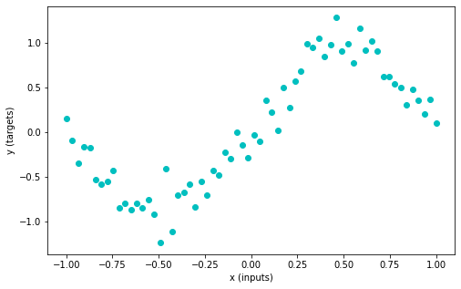
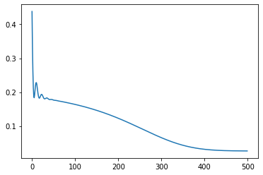
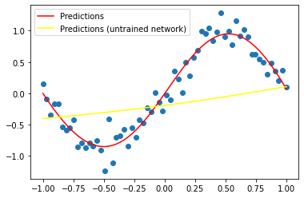
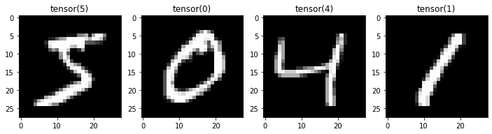
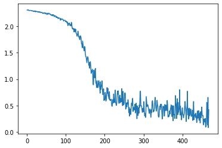

Lesson 3: Neural Networks and Loss Functions
In Lesson 2 we said that if we have (1) a function defined by some parameters and (2) a loss function or some measure of how well it performs then we can optimize the parameters using something like gradient descent to try and improve performance.
What does that ‘function’ look like? In many cases, the answer is some sort of neural network. Artificial Neural Networks (ANNs) have been around for many years [citation needed] but it is only in the psat decade or so that we’ve really figured out ways to train them well. The reason they’re so great is that they are pretty good general function approximators. In this notebook we’ll start with a very simple network approximating a fairly simple function, and then we’ll move on to solving a classic ML problem: classifying hand-written digits.
In the bonus notebook [TODO finish, link] and tomorrows lesson [TODO finish, link] we will build on these foundations to see how we can use modernt pre-trained networks to solve much more complex problems than those presented here.
For this notebook the code examples move fairly quickly - the lesson run-through will try to break them down more so check that out if you’re having difficulty.
A Simple Neural Network
Let’s start by making a smallish network to solve a small (contrived) problem. We’ll generate some data, and as in the previous lesson we’d like our network to learn the relationship between our input data (x) and output data (y).
# Generating some data (inputs and targets)
n_samples = 64
inputs = torch.linspace(-1.0, 1.0, n_samples).reshape(n_samples, 1)
noise = torch.randn(n_samples, 1) / 5
targets = torch.sin(3.14 * inputs) + noise
plt.figure(figsize=(8, 5))
plt.scatter(inputs, targets, c='c')
plt.xlabel('x (inputs)')
plt.ylabel('y (targets)')
plt.show()
Here’s how we can make a neural network, leaning on PyTorch’s handy functions:
## A Wide neural network with a single hidden layer
class WideNet(nn.Module):
def __init__(self, n_cells=512): # Initialize our network
super().__init__()
self.layers = nn.Sequential(
nn.Linear(1, n_cells), # One input, n_cells outputs
nn.Tanh(), # Our non-linearity - there are many on offer!
nn.Linear(n_cells, 1), # n_cells inputs, one output
)
def forward(self, x):
return self.layers(x)We’re inheriting from the nn.Module class, which gives us some bonus features. For example, instead of directly calling the forward method (which passes the data through the different layers) we can just create our network and call it like a function:
wn = WideNet()
print('Input shape:', inputs.shape)
out = wn(inputs) # This passes our data in as the input to the forward method defined above
print('Output shape:', out.shape)
print('PyTorch sumary of wn:')
wnInput shape: torch.Size([64, 1])
Output shape: torch.Size([64, 1])
PyTorch sumary of wn:WideNet(
(layers): Sequential(
(0): Linear(in_features=1, out_features=512, bias=True)
(1): Tanh()
(2): Linear(in_features=512, out_features=1, bias=True)
)
)This network includes some layers that have learnable parameters. We can access all of these via wn.parameters() - in this case we get four sets of parameters - the weights and biases for each of the two linear layers. Feel free to experiment with the network definition and see how this changes:
[p.shape for p in wn.parameters()][torch.Size([512, 1]),
torch.Size([512]),
torch.Size([1, 512]),
torch.Size([1])]Time for our training loop - compare this with the optimization loop we in the previous lesson (spoiler: they’re the same!). We’re optimizing the parameters of our neural network - all the weights and biases in the different layers.
# Create our network
wide_net = WideNet()
# Create a mse loss function
loss_function = nn.MSELoss()
# Stochstic Gradient Descent optimizer
optimizer = torch.optim.Adam(wide_net.parameters(), lr=1e-3)
# The training loop
losses = [] # keeping recods of loss
for i in range(500): # 500 'epochs' of training
optimizer.zero_grad() # set gradients to 0
predictions = wide_net(inputs) # Compute model prediction (output)
loss = loss_function(predictions, targets) # Compute the loss
loss.backward() # Compute gradients (backward pass)
optimizer.step() # update parameters (optimizer takes a step)
# Storing our loss for later viewing
losses.append(loss.item())
# Plot the losses over time
plt.plot(losses) # Plot the losses over time
THINK/DISCUSS: Go line-by-line through the code above - does it make sense?
Notice we don’t have to set requires_grad manually on any of the parameters, since the learnable parameters in each layer are grouped automatically by wide_net.parameters() (inspect that and see what it contains).
plt.scatter(inputs, targets)
plt.plot(inputs, wide_net(inputs).detach(), c='red', label='Predictions')
# Create a new, untrained widenet and plot those predictions for comparison
new_wn = WideNet()
plt.plot(inputs, new_wn(inputs).detach(), c='yellow', label='Predictions (untrained network)')
plt.legend()
plt.show()
# Exercise: Create a neural network with two hidden layers and train it on this same task...A Lightning Overview of ConvNets
So-called ‘dense’ networks are useful in some cases, but we need to be mindful of the number of parameters required to solve certain types of problems. For example, consider the case of image recognition - our inputs consist of thousands of individual pixel values. A dense network that could take in 500px images and then run them through many hidden layers ends up with millions or billions of parameters, which can make training tricky.
In addition, each pixel feeds into a different part of the network. When we look at how the vision system works in the brain, or just think about what we’d want in a computer vision system, we’ll start to hit requirements that might not be easy to satisfy with a simple MLP network. Fortunately, we have some tricks to imporve things! Here’s another video that takes us through a key idea in deep learning for images: CNNs
Here’s another video from the (free and I CC-licenced) neuromatch course that gives a little more background:
html = ipd.display(ipd.IFrame(src="https://www.youtube.com/embed/AXO-iflKa58", width="560", height="315"))
htmlThe following interactive website is a great way to get an intuition for both how convolution works. You can see each learned filter and the corresponding output. It also shows a second key idea: pooling. By ‘downsampling’ the outputs of successinve convolution layers we end up with fewer and fewer activations, each representing more and more of the input image. Play around a bit until you’re sort of happy with the basic concepts (see the video for more discussion and explanations) and then move on to the next section, where we’ll build our own very similar network.
# html = ipd.display(ipd.HTML('<iframe width="1200" height="600" src="https://adamharley.com/nn_vis/cnn/3d.html" title="CNN Visualization" frameborder="0" allow="accelerometer; autoplay; clipboard-write; encrypted-media; gyroscope; picture-in-picture" allowfullscreen></iframe>'))
# htmlFor more on what convolution is, how the different hyperparameters (padding, stride etc) do and a general overview of CNNs, see https://poloclub.github.io/cnn-explainer/
The Dataset
We’ll use the classic MNIST dataset (as shown in the video and examples above). But these same ideas apply to more complex image recognition
#@title Loading the data
mnist_dl_train = get_mnist_dl(batch_size=128, split='train')
mnist_dl_test = get_mnist_dl(batch_size=128, split='test')
# Get one batch of data
batch = next(iter(mnist_dl_train))
data_shape = (1, 28, 28)
# Plot a few examples
fig, axs = plt.subplots(1, 4, figsize=(12, 4))
for i in range(4):
im, label = batch['image'][i], batch['label'][i]
axs[i].imshow(im.squeeze(), cmap='gray')
axs[i].set_title(label)Reusing dataset mnist (/root/.cache/huggingface/datasets/mnist/mnist/1.0.0/fda16c03c4ecfb13f165ba7e29cf38129ce035011519968cdaf74894ce91c9d4)
Reusing dataset mnist (/root/.cache/huggingface/datasets/mnist/mnist/1.0.0/fda16c03c4ecfb13f165ba7e29cf38129ce035011519968cdaf74894ce91c9d4)
Defining Our Network
The convolution operation is handled by the nn.Conv2d layer. Uncomment the next line to view some info about this:
# ?nn.Conv2dLet’s use nn.Conv2D to convolve this image with some random kernels:
conv_test = nn.Conv2d(in_channels=1, out_channels=12, kernel_size=5, padding=0)
image = batch['image'][0].unsqueeze(0) # unsqueeze the first image to make this a 'batch of size 1'
print('Input shape: ', image.shape) # One channel greyscale image
print('Output shape: ', conv_test(image).shape) # 12 output channels (from 12 kernels)Input shape: torch.Size([1, 1, 28, 28])
Output shape: torch.Size([1, 12, 24, 24])Note the initial shape is slightly smaller - how does padding change this? Does the output shape make sense?
This layer has some trainable parameters: the kernels. Let’s check these out:
conv_test.weight.shape # 12 filters, each 1x5x5torch.Size([12, 1, 5, 5])THINK: Does the number of parameters in this layer depend on the input image size?
Here’s a network that uses these layers (along with nn.MaxPool2d for the downsampling/pooling). We could use nn.Sequential as in the previous example, but I’d like to show another common style here. We define all the layers we’ll need in init but only in the forward() method do we actually specify how that data should flow through the network.
# Network definition
class MiniCNN(nn.Module):
def __init__(self):
super(MiniCNN, self).__init__()
self.conv1 = nn.Conv2d(1, 32, 3)
self.conv2 = nn.Conv2d(32, 64, 3)
self.fc1 = nn.Linear(9216, 128)
self.fc2 = nn.Linear(128, 10) # 10 outputs (for 10 digits)
self.pool = nn.MaxPool2d(2)
def forward(self, x):
x = self.conv1(x)
x = F.relu(x)
x = self.conv2(x)
x = F.relu(x)
x = self.pool(x)
x = torch.flatten(x, 1)
x = self.fc1(x)
x = F.relu(x)
x = self.fc2(x)
return xThe Training Loop

Here’s a training loop that should now be getting quite familiar. A few noteworthy things: - We can’t push all the images through in one go, so within each epoch (i.e. each full psas through the data) we do multiple batches. This is when ‘Gradient Descent’ becomes ‘Stochastic Gradient Descent’ or ‘Mini-batch GD’ depending on who you’re talking to. PyTorch does the batching for us via something called a DataLoader. - We’d like to train on the GPU, so we need to make sure both the model and the data are on the right device with .to(device) (device is defined earlier). - We’re using a loss function that is good for classification tasks: nn.CrossEntropyLoss(). Accuracy has ‘steps’ and so it makes differentiation tricky. By treating the outputs of the network as probabilities we can see how confident it is that something is in a specific class while keeping everything continuous and differentiable. Don’t worry too much about this :)
# Set up model, loss and optimizer
model = MiniCNN().to(device)
criterion = nn.CrossEntropyLoss()
optimizer = torch.optim.SGD(model.parameters(), lr=0.01)
losses = []
# The training loop
for batch in tqdm(mnist_dl_train, unit='batch'):
data, target = batch['image'], batch['label']
data, target = data.to(device), target.to(device)
optimizer.zero_grad()
output = model(data)
loss = criterion(output, target)
loss.backward()
optimizer.step()
# Log the loss
losses.append(loss.item()) # .item makes a copy of just the value, detached from any gradient calculations.
plt.plot(losses)
ASIDE: If you’re on a machine with a GPU, remove all to(device) in the above code - is it slower on CPU?
Evaluation - how well does it do?

## Testing
correct = 0
total = 0
with torch.no_grad():
# Iterate through test set minibatchs
for batch in tqdm(mnist_dl_test):
data, labels = batch.values() # TODO fix this in data eg
data, labels = data.to(device), labels.to(device) # Move the data to GPU for faster execution.
y = model(data) # Forward pass
predictions = torch.argmax(y, dim=1) # The model has ten outputs, one for each digit. Here we take the index with the highest output
correct += torch.sum((predictions == labels).float())
total += labels.shape[0]
print(f'Test accuracy: {correct/total * 100:.2f}%')Test accuracy: 88.37%# Exercise: See how good you can get! Tweak the architecture, the hyperparameters, the training time, the optimizer... go wild ;)
# You may want to try doing multiple passes through the dataloader - aka multiple epochs.Phew! Welcome to deep learning :)
We’re learning just enough to move on with the course, but these are some big topics and we’re barely scratching the surface. If you’re interested in more of the theory or implementing some of these ideas from scratch, you might like to check out the content at https://deeplearning.neuromatch.io/ or one of the many deep learning courses on various MOOC platforms. If you’d like a more top-down approach to doing practical deep learning realy well, I can’t recommend the fastai course highly enough.
There is also a great from-scratch lesson from Andrej Karpathy going into all the nitty-gritty details of how gradients are calculated and so on: https://www.youtube.com/watch?v=VMj-3S1tku0
Loss Functions
It’s worth talking just a little more here about the concept of loss functions.
In our first task, we wanted to predict a continuous output, y. How do we compare the network outputs with the known values in such a way as to force them to be as close as possible? A popular choice is the mean squared error (MSE) or the root mean squared error (RMSE). We used the builtin PyTorch method but we can also implement this ourselves and verify that the result is the same on some dummy data:
targets = torch.tensor([0.2, 0.7, 0.1])
predictions = torch.tensor([0.25, 0.6, 0.3])
print('Result using nn.MSELoss()(predictions, targets):', nn.MSELoss()(predictions, targets)) # Think: does order matter?
print('Result using ((targets - predictions)**2).mean():', ((targets - predictions)**2).mean())Result using nn.MSELoss()(predictions, targets): tensor(0.0175)
Result using ((targets - predictions)**2).mean(): tensor(0.0175)MSE loss is sometimes called L2 loss. You could also try the Mean Absolute Error (MAE), aka L1 loss. The choice comes down to what we’d like to penalize. Because the error is squared in MSE, larger errors result in a much larger loss, while small errors incur only a small loss. This is preferable in many cases - we’d prefer to explicitly avoid massive errors!
Classification
How would we make a loss function for classification? You could try something like accuracy: for a given batch, loss = number_wrong/number_of_examples, for example. But there’s a problem. Our updates require gradients, and accuracy will not be smooth and differentiable! So, we need to come up with a better loss function.
One candidate is MSE! We can encode our labels using one-hot encoding to get 10 values, 0 everywhere except for the column corresponding to the right class label:
# Exercise: Can you use MSE loss for classification?
# You can encode some class labels like so:
labels = torch.tensor([0, 1, 7, 3, 9])
one_hot_encoded = F.one_hot(labels, num_classes=10)
one_hot_encodedtensor([[1, 0, 0, 0, 0, 0, 0, 0, 0, 0],
[0, 1, 0, 0, 0, 0, 0, 0, 0, 0],
[0, 0, 0, 0, 0, 0, 0, 1, 0, 0],
[0, 0, 0, 1, 0, 0, 0, 0, 0, 0],
[0, 0, 0, 0, 0, 0, 0, 0, 0, 1]])Set up a network with 10 outputs, and use MSE to force it towards predicting low outputs for the wrong labels and high labels for the right ones. This should work, and was how the first digit recognition network was trained!
In practice, this is not the way we usually do it. Cross Entropy Loss takes the model outputs and does an operation called SoftMax on them (which scales the outputs to sum to 1) so that they can be interpreted as probabilities. Then it calculates a score based on the log of the probability associated with the correct label. Technically, CE is comparing two distributions (the predicted probability distribution from the model, and the known label distribution) and there’s lots of information theory and confusing terminology you are welcome to read up on. But the core of the matter is this: for labels very close to the true values, the loss will be small. For labels that are far off, the loss is high. And thanks to the maths, we can interpret the softmax of the model outputs as probabilities showing how ‘confident’ the model is.
Here is an attempt at re-creating CrossEntropyLoss in code:
labels = torch.tensor([0, 2, 1, 0])
predictions = torch.tensor([[1.95, -0.6, -0.3],
[-0.25, -0.6, 2.3],
[0.05, 3.6, -0.3],
[3.7, -1.1, -1.2]])
print('Result using nn.CrossEntropyLoss()(labels, predictions):', nn.CrossEntropyLoss()(predictions, labels))
# Softmax of raw preds (usually model outputs)
probs = nn.Softmax(dim=1)(predictions)
print('Softmax output:\n', probs)
# Get the probabilities corresponding to the correct labels
relevant_probs = probs[range(labels.shape[0]), labels]
print('Relevant Probabilities:', relevant_probs)
# Calculate
neg_log = -relevant_probs.log()
print('Negative Liklihoods:', neg_log)
print('Mean NL on softmax outputs:', neg_log.mean())Result using nn.CrossEntropyLoss()(labels, predictions): tensor(0.0892)
Softmax output:
tensor([[0.8450, 0.0660, 0.0891],
[0.0689, 0.0486, 0.8825],
[0.0274, 0.9533, 0.0193],
[0.9846, 0.0081, 0.0073]])
Relevant Probabilities: tensor([0.8450, 0.8825, 0.9533, 0.9846])
Negative Liklihoods: tensor([0.1685, 0.1250, 0.0478, 0.0156])
Mean NL on softmax outputs: tensor(0.0892)# Exercise try a version of widenet on mnist as well - how good can you get it?Pretrained Networks
Training a network from scratch can be time-consuming and require LOTs of data…
Page stats: Total Hits:  Page visitors:
Page visitors: